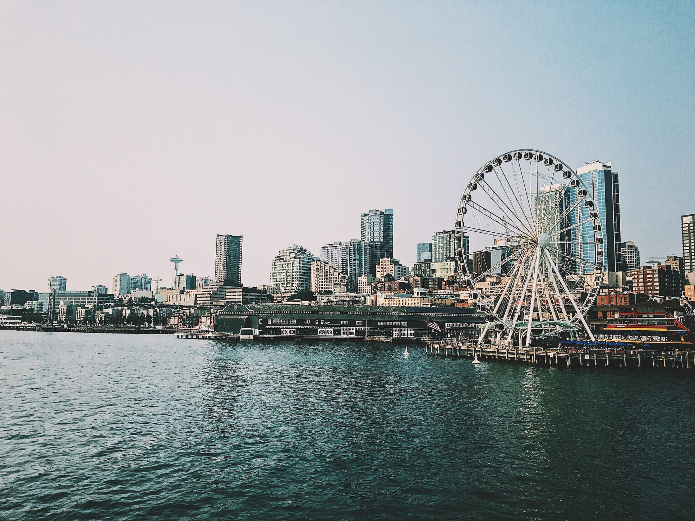

Why should you visit Seattle?
Seattle, home of the Seahawks and Starbucks is a city surrounded by water, mountains and forests.
Also home to Microsoft and Amazon, the city boasts a large number of activities everyone would love to experience. These include the first Starbucks, which resides in Pike Place Market, a great place to find yourself exploring during the day and relaxing with a nice cup of coffee. Near the Market, Seattle also has its own beautiful aquarium and The Great Wheel, a ferris wheel that runs throughout the day.